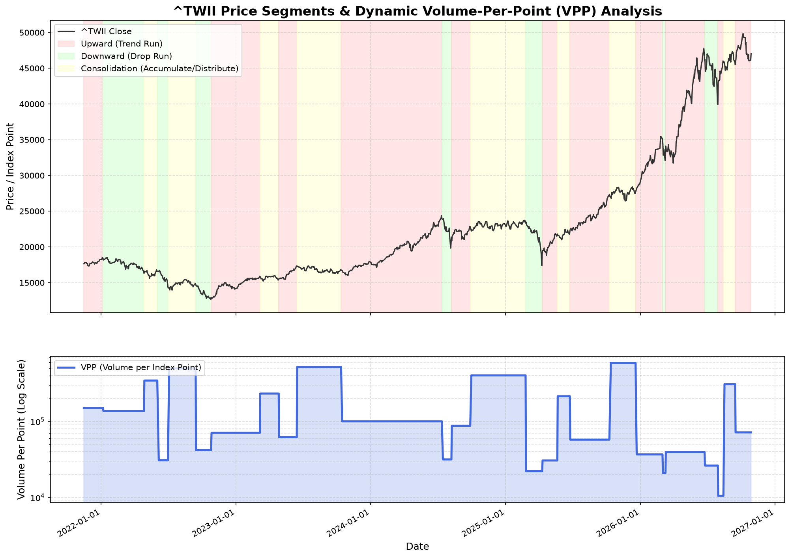

量價效率分析 (VPP)
上漲 1點耗量 91,041 股
盤整段 VPP 為上漲段的 15.1 倍，極端證明盤整區為高摩擦力籌碼吸納期。
波動對稱預估
上漲趨勢波段中
目前收盤 49,301.96 點，已進入 50%-70% 中勝率成熟帶。
天花板目標預估
極限目標 64,858 點
依歷史極限漲幅 (+42.51%) 投影，預估剩餘時間約 166 個交易日。
完整模型量化分析摘要
最新執行數據
【^TWII】【^TWII】量價效率與波動對稱動能模型 (改良版改良成果)
================================================================================
【1. 量價效率分析 (Volume-Per-Point, VPP)】
* 上漲波段: 平均移動 1 點需消耗 93,882 股之成交量
* 下跌波段: 平均移動 1 點需消耗 93,280 股之成交量
* 盤整波段: 平均移動 1 點需消耗 1,376,197 股之成交量
* 💡 學術結論：盤整段之 VPP 為上漲段的 14.7 倍、下跌段的 14.8 倍，極端證明了盤整區確實是高摩擦力的「籌碼吸納/主力出貨期」！
--------------------------------------------------------------------------------
【2-A. 波動等幅對稱分析 (二波段等幅規律 - 上漲趨勢)】
* 樣本數: 18 次對接波段
* 平均等幅比率 (後波幅 / 前波幅): 136.87%
* 波動等幅對稱符合度 (漲跌幅在 80%~125% 內比例): 22.22%
--------------------------------------------------------------------------------
【2-B. 波動等幅對稱分析 (二波段等幅規律 - 下跌趨勢)】
* 樣本數: 13 次對接波段
* 平均等幅比率 (後波幅 / 前波幅): 173.00%
* 波動等幅對稱符合度 (漲跌幅在 80%~125% 內比例): 38.46%
--------------------------------------------------------------------------------
【3. 動能枯竭與接續判斷預測準確度】
* 當波段動能（成交量）低於前波同類波段時，預測將進入「盤整或反轉」：
* 回測準確率: 13 / 30 = 43.33%
* 💡 改良模型結論：單一動能枯竭法則之回測準確率為 43.33%（低於隨機勝率 50%），顯示單靠成交量縮減不足以獨立作為反轉訊號，需結合 VPP 與波動對稱比率作二次確認。
================================================================================
[短線動能預警 (3% 領先燈號)]
* 短線波段狀態: 短線止跌上漲
* 短線轉折日期: 2026-10-27 (基準價 45,676.67)
* 短線累計漲跌: +2.98%
* 短線持續天數: 1 天
--------------------------------------------------------------------------------
【4. 波段機率落點與資金規劃分析 (Probabilistic Target & Capital Planning)】
* 目前波段型態: 【上漲趨勢波段】
* 本波段起始點: 45,511.49 (2026-09-15)
* 前一波上漲段幅: 14.72% (對稱基準點)
* 當前最新收盤價: 47,035.58 (目前漲幅: 3.35%, 目前對稱比率: 22.76%)
* 💡 歷史波段對稱性機率落點與勝率列表 (Win Rate Targets):
-----------------------------------------------------------------------------------------------
歷史勝率 (Win Rate) | 對稱比率 (Ratio) | 目標漲幅 (Target Pct) | 目標點位 (Price Level) | 目前狀態 (Status)
-----------------------------------------------------------------------------------------------
100% | 0.1687 | 2.48 % | 46,641.43 | 🟢 已達成
90% | 0.1933 | 2.85 % | 46,806.47 | 🟢 已達成
80% | 0.3635 | 5.35 % | 47,946.39 | 🟢 已達成
70% | 0.5930 | 8.73 % | 49,484.13 | 🟢 已達成
60% | 0.9703 | 14.28 % | 52,011.52 | ⚪ 未達成
50% | 1.2083 | 17.79 % | 53,606.08 | ⚪ 未達成
40% | 1.5163 | 22.32 % | 55,669.53 | ⚪ 未達成
30% | 1.7695 | 26.05 % | 57,365.60 | ⚪ 未達成
20% | 2.0586 | 30.30 % | 59,302.50 | ⚪ 未達成
10% | 3.4062 | 50.14 % | 68,330.95 | ⚪ 未達成
-----------------------------------------------------------------------------------------------
* 🛠️ 資金與曝險規劃建議 (Capital Planning Advice):
1. 【高勝率安全帶 (80%-100% 勝率)】: 點位約在 46,641.43 ~ 47,946.39。目前收盤價 (47,035.58) 正處於此區間內，已順利突破 100% 勝率點 (46,641.43)，正在向 80% 勝率關卡 (47,946.39) 推進。
- 此區間為極安全的初始建倉區。若未來拉回至此，為高期望值的加碼點。
2. 【中勝率成熟帶 (50%-70% 勝率)】: 點位約在 47,946.39 ~ 53,606.08。最新收盤價 (47,035.58) 尚未到達此區間起點 (47,946.39)。
- 目前波段仍在初期/中前期發展中，可維持既有多頭部位並將防守停損設定於起始點附近。
3. 【低勝率高利潤帶 (10%-40% 勝率)】: 目標點位在 53,606.08 ~ 57,365.60 以上。目前價格尚未到達此區域。
- 若市場動能極強，向 40% 或 30% 邁進，應逐步調降部位曝險比例，降低槓桿以防範隨時可能的急跌拉回。
* 🚀 【上漲波段目標預估 (對稱性與極限值)】
1. 預估上漲極限高點：
* 依歷史極限漲幅 (+42.51%) 投影，本波上漲【天花板目標為：64,858.42 點】。
* 目前狀態：目前距離天花板僅剩約 37.89% 的空間。
2. 時間長度預估：
* 歷史極限上漲天數：182 天。
* 目前已持續：26 天。
* 預估本波剩餘時間：【約 156 個交易日】。
3. 隨後修正幅度預估（一旦確認觸頂進入下跌段）：
* 預估基準點（本波至今最高收盤價）：49,822.55 點
* 溫和修正路徑 (歷史平均 -9.92%)：預估修正低點約為 44,879.09 點。
* 劇烈修正路徑 (歷史最大 -19.37%)：預估修正低點約為 40,171.92 點。
================================================================================
數據分析報表已匯出至: /data/data/com.termux/files/home/storage/downloads/momentum_analysis_backtest.csv
動能效率分析圖 (含 VPP 曲線) 已儲存至: /data/data/com.termux/files/home/storage/downloads/market_momentum_analysis.png
最新量價動能分析圖表
最新更新圖檔
